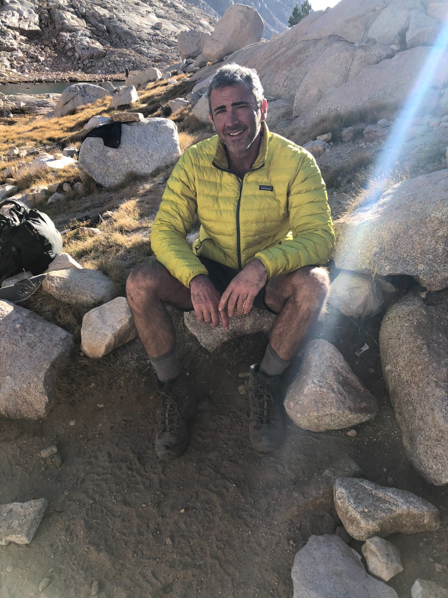

Men's retreat

Somewhere in the Sierra Nevada, slightly lost
Over ten years ago when I was in my mid-forties, after about 30 years of drinking, I finally got sober. It wasn't because I hit rock bottom — it was because I was able to recognize who I was being in front of my sons, then 13 and 10. It was this one music festival which ended with me as a mess, and my wife livid and on the brink of leaving. I was sickened to think that I might be anything less than my best for my boys. I accepted that I needed to choose a new version of myself and I quit. Though, truth be told, it would take me many more years to realize that the alcohol was just a symptom of wounded and undeveloped parts of myself, and that my healing had only just begun.
It just so happened that around the same time, my oldest son and I got involved in a rites of passage organization for young men. We were seeking an initiation experience for him that I hadn't had. Connecting with that community led us both into men's work — his growth, then his brother's, my own development as a facilitator and leader. And on and on. That journey is still underway.
Then life kept happening. Nine years ago this year, I lost my mom. I then took care of my dad, we healed our relationship, but then we lost him just 2 years later. Just recently I was let go from a long corporate career I'd built much of my identity around. So many other losses over the years. Grief, failure, disorientation. What I've found is that the tools I'd already been gathering — meditation, men's work, plant medicine, honest community — weren't just nice practices for the good times. They were the things that actually held me together when things fell apart. Loss and failure as forging fire. I mean that literally, not as a bumper sticker.
I'm deep into my own crossing right now. And I'm using this moment to step more fully into work that actually matters to me — introducing others to the transformative tools I've found along the way. I'm called to share this not because I've arrived anywhere, but because I've learned something true about this journey: it's about connection, and about helping each other find our way back to ourselves. Sitting quietly in loving awareness and listening to each other feels like ancient technology we're slowly remembering.
A little more about me — I've been with my wife for 29 years, married for 24. She works with women, channeling the divine feminine and teaching feminine movement and embodiment. We have two amazing sons, 20 and 24. I love being outdoors, traveling, watching movies, and going deep on music — medicine music, EDM, the kind of sound that moves something in you. I teach a graduate course in IT Ethics that gives me an opportunity to lean into the conversations around AI. Having a center in nature-based, humanist practices while also appreciating the modern magic of technology gives me what I think is a balanced perspective on where we are as a species.
I don't live like a monk. I live like a person who is trying to pay attention, and who thinks that's actually worth doing.
If any of this resonates — if you're somewhere in the middle of your own forging fire, or just feeling called to go a little deeper — I'd love to connect.
Men's retreat

Somewhere in the Sierra Nevada, slightly lost
The wound is the place where the light enters you. — Rumi
Stay connected.
Occasional reflections, updates on offerings, and what's alive in the work.
No noise. Unsubscribe anytime.